User Manual
Complete guide for agents and managers using the Lobato Tours quoting system.
Table of Contents
1. Introduction
The Lobato Tours quoting system lets travel agents quickly create, manage, and share professional travel quotes with clients. From a simple flight quote to a full package including hotel, cruise, visa, and insurance — every quote is built step-by-step using the Quote Wizard, then exported as a branded PDF ready to send to the client.
This manual covers every page and every button in the system so you always know exactly what each action does and why it matters.
2. User Roles
Every account has one of three roles, each with different permissions:
3. Signing In
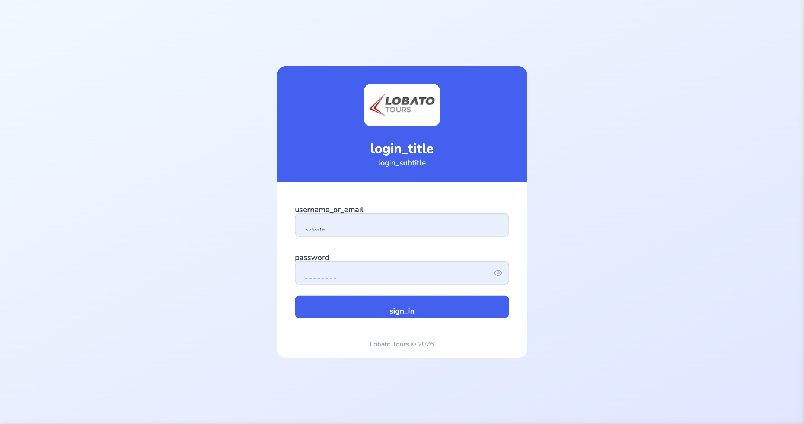
The login page is the entry point to the system. Enter your credentials and click Sign In. If your session is still active you will be taken directly to the dashboard.
| Field / Button | What it does | Why you use it |
|---|---|---|
| Username or Email | Enter your assigned username or email address. | Identifies your account so the system loads your role and your quotes. |
| Password | Enter your account password (hidden as dots). | Authenticates you securely to prevent unauthorized access. |
| Sign In button | Submits your credentials and logs you in. Shows a spinner while verifying. | Opens the application. If credentials are wrong an error message appears inline so you can retry without refreshing the page. |
| Language toggle (EN / ES) | Switches the interface language between English and Spanish. | Work in whichever language feels most comfortable. The preference is remembered for your session. |
4. Dashboard
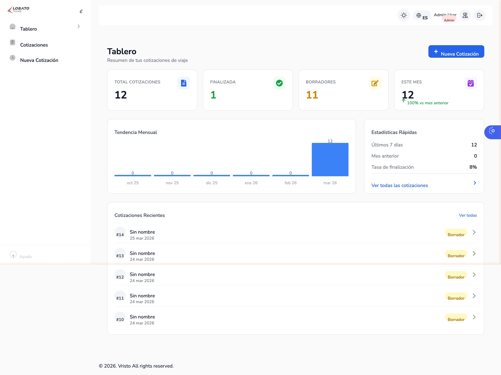
The dashboard is the first screen you see after logging in. It gives you a real-time overview of your quote activity and quick access to every part of the system.
Sidebar Navigation
| Element | What it does | Why you use it |
|---|---|---|
| Lobato Tours logo | Click to return to the dashboard from any page. | Quick "go home" shortcut from anywhere in the app without using the browser back button. |
| Sidebar toggle (hamburger ☰) | Collapses the left sidebar so only the favicon icon shows, giving more horizontal space to the main content. Click again to expand. | Use when working on a wide table or quote wizard and needing more screen real estate. |
| Quotes (Cotizaciones) | Navigates to the full list of all your quotes. | Your main workspace for finding and managing existing quotes. |
| New Quote (Nueva Cotización) | Opens the Quote Creation Wizard for a brand-new quote. | The fastest way to start building a new quote for a client. |
| Language switcher (EN / ES) | Changes the interface language at any time. | Switch between English and Spanish whenever you need to. |
| Help button (? icon, bottom of sidebar) | Opens a dropdown with links to the User Manual and the Admin Guide, each opening in a new tab. | Access documentation without leaving the app or searching the internet. |
| User menu / Avatar | Displays your username and role. May include a logout option. | Confirm which account is currently active — important on shared computers. |
Dashboard Stat Cards
| Card | What it shows |
|---|---|
| Total Quotes | All quotes you have created (all quotes system-wide for managers/admins). |
| Finished | Quotes marked as finalized — complete and ready to send to clients. |
| Drafts | Quotes still in progress — incomplete or not yet marked as finished. |
5. Quotes List
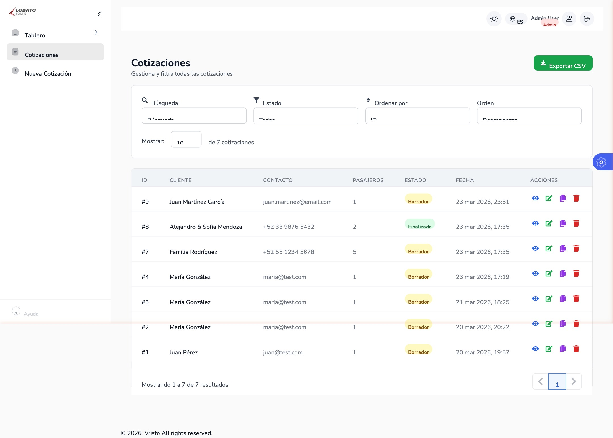
The Quotes List is where you find, filter, and manage all of your quotes. Every quote ever created appears here as a row in the table.
Top Action Bar
| Button | What it does | Why you use it |
|---|---|---|
| + New Quote | Opens the Quote Creation Wizard from scratch to start a new quote. | Use this every time you need to create a quote for a new client or trip. |
| Export CSV | Downloads all currently visible quotes (respecting active filters) as a .csv spreadsheet file. | Generate reports, share data with management, or analyze quote trends in Excel or Google Sheets. |
Filters and Search
| Control | What it does | Why you use it |
|---|---|---|
| Search box | Filters the list instantly as you type — matches against client name, contact info, and destination. | Find a specific client's quote in seconds without scrolling through the entire list. |
| Status filter | Show All quotes, only Finished quotes, or only Drafts. | Focus on quotes that still need work (drafts) or quotes that are ready to share (finished). |
| Sort By dropdown | Sort the list by creation date, client name, or destination. | Organize the list in the most useful way for your current task. |
| Order (Ascending / Descending) | Flip the sort direction for whichever field is selected. | See newest quotes first (date descending) or alphabetical A-Z (name ascending). |
| Show (rows per page) | Choose how many quotes appear per page: 10, 25, 50, or All. | View more quotes at once on a large monitor, or fewer on a smaller screen. |
Quote Table Columns
| Column | What it shows |
|---|---|
| ID | The unique number assigned to this quote when it was first saved. |
| Client | The main client name entered in Step 1 of the wizard. |
| Contact | The client's primary email or phone number. |
| Destination | The main travel destination from the Trip Info step. |
| Date | The date the quote was first created in the system. |
| Status | Finished or Draft. |
| Actions | Four icon buttons for working with that quote row (see below). |
Row Action Icons
| Icon | Name | What it does | Why you use it |
|---|---|---|---|
| 👁 | View Details | Opens the full Quote Detail page for that quote in the current tab. | Review all details, service tabs, totals, and sharing options without entering edit mode. |
| ✏️ | Edit | Re-opens the Quote Wizard pre-filled with all existing data so you can make changes. | Update prices, add or remove services, correct client information, or add missing fields. |
| 📋 | Duplicate | Creates an exact copy of the quote as a new draft, with a new unique ID. | Create a variation of an existing quote for another client, or offer the same trip at a different price point, without starting from scratch. |
| 🗑 | Delete | Shows a confirmation prompt, then permanently removes the quote and all its data. | Remove test quotes, cancelled trips, or accidental duplicates. This action cannot be undone. |
Pagination
| Control | What it does |
|---|---|
| « / » (first/last) | Jump to the very first or very last page of results. |
| ‹ / › (previous/next) | Move one page backward or forward through the results. |
| Page number buttons | Click any page number to jump directly to that page. |
| Showing X–Y of Z results | Tells you which records are currently visible and the total count matching your filters. |
6. Quote Detail View
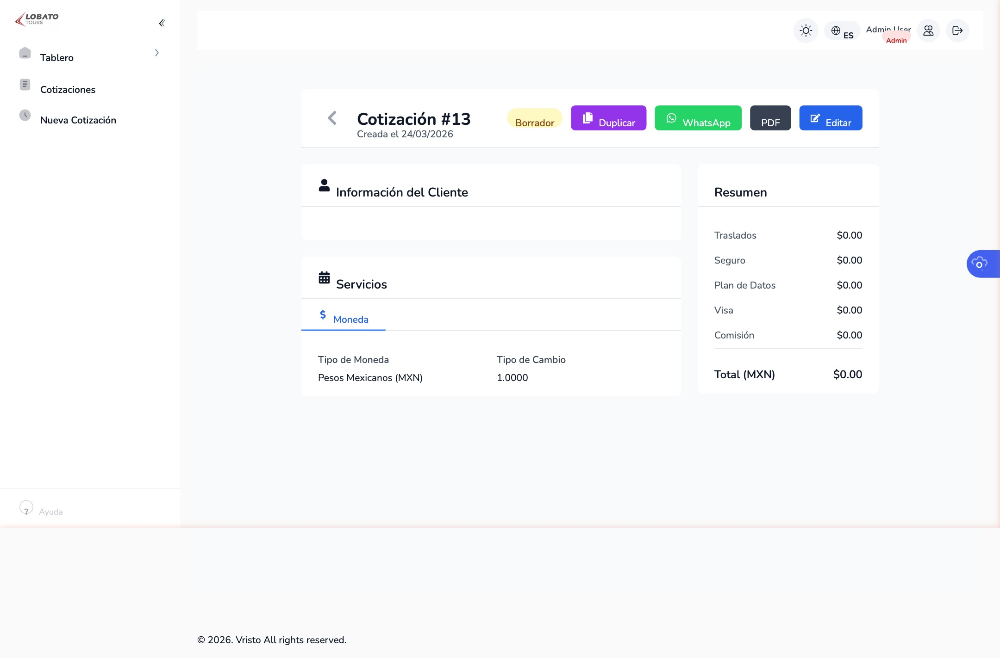
The Quote Detail page gives you the complete view of a single quote — client info, all services, pricing breakdown, and all sharing options in one place. This is where you review a quote before sending it to the client.
Header Action Buttons
| Button | What it does | Why you use it |
|---|---|---|
| ← Back to list | Returns to the Quotes List page, preserving your previous filter and sort settings. | Go back without losing your place in the list. |
| Edit (pencil icon) | Re-opens the Quote Wizard with all data pre-loaded so you can make changes. | Correct a price, add a service, update client details, or add missing required fields. |
| Duplicate (copy icon) | Creates a new draft quote identical to this one with a new ID. | Reuse an existing quote structure for another client, or create a group variation without starting over. |
| Delete (trash icon) | Shows a confirmation dialog, then permanently deletes this quote. | Remove a quote that is no longer needed. Cannot be undone. |
| PDF (red button) | Opens the generated PDF in a new browser tab instantly. | Preview exactly what the client will see before sharing the link. Also use this to print or save to your computer. |
| WhatsApp share (green button) | Generates a pre-written WhatsApp message containing the quote summary and a direct link to the PDF, ready to send from your phone or WhatsApp Web. | The fastest way to deliver a finished quote to a client — one click opens a ready-to-send message. |
| Status badge | Displays Finished or Draft so you know at a glance whether this quote is ready to share. | Quick visual check before you send anything to the client. |
| Created on date | Shows when this quote was originally created. | Useful for tracking how long a quote has been active and whether it needs to be refreshed with updated prices. |
Trip Info Section
This section always appears prominently at the top of the detail view, independent of which services are included:
| Field | What it shows |
|---|---|
| Main Destination | The primary travel destination (e.g., Cancún, Paris, Mallorca). |
| Trip Start Date | The date the client departs. |
| Return Date | The date the client returns. Together with start date defines the total trip duration. |
Services Tabs
Below the trip info is a tabbed area showing each service that was added to the quote. Click any tab to view its details and pricing. Only tabs for services actually included in the quote are shown.
| Tab | What it shows |
|---|---|
| Package | Package name, price, description, and number of travelers included. |
| Flight | Airline, base fare, taxes, airport fees, luggage charges, and per-person total. |
| Hotel | Hotel name, room type, number of nights, and rate per night. |
| Transfer | Transfer type, provider company, and total amount. |
| Cruise | Cruise line, cabin type, itinerary, and total price. |
| Tickets | Attraction names and ticket prices per person. |
| Ferry | Route, operator, and fare. |
| Insurance | Provider, coverage type, and premium amount. |
| Data Plan | Mobile data plan details and cost for the destination country. |
| Visa | Visa type, destination country, and processing fee. |
Summary Sidebar
| Element | What it does | Why you use it |
|---|---|---|
| Sub-quote button | Opens the Sub-quote modal where you can create a separate quote for a subset of travelers and/or services. Only visible when the quote has more than one traveler. | Ideal for groups where some members want different services. Create a separate, clean quote for each subgroup without duplicating the whole quote. |
| Per-service cost lines | Shows the subtotal for each service (Transfer, Package, Flight, etc.) individually. | See exactly how the total is built up — useful when discussing the price breakdown with a client. |
| Commission line | Shows the commission percentage set in the wizard and the calculated dollar/peso amount. | Instantly see your earnings on the quote without any mental math. |
| Grand Total | The final price the client pays, including all services and commission. | The headline number you present to the client. |
| Travelers list | Each traveler listed with their age range and their individual share of the total cost. | Useful for group quotes to show each person their own price — especially when ages affect pricing. |
Sub-quote Modal
| Control | What it does | Why you use it |
|---|---|---|
| Service checkboxes | Toggle each service on/off to include it in the sub-quote. | Include only the services relevant to this subset of travelers. |
| People count (per service) | Set the number of people for each service in the sub-quote. | Price the sub-quote for the exact number of travelers in the subgroup. |
| Commission % field | Override the commission percentage for this sub-quote. | Different subgroups may have different commission arrangements. |
| Running total | Updates in real time as you change services and person counts. | See the sub-quote total instantly before committing to creating it. |
| Create Sub-quote button | Saves the sub-quote as a new independent draft quote linked to the original. | Produces a separate PDF-ready quote for that subgroup of travelers. |
| ✕ Close | Dismisses the modal without saving anything. | Cancel if you changed your mind or opened the modal by mistake. |
7. Quote Creation Wizard
The wizard guides you through building a complete, professional travel quote step by step. You can move freely between steps at any time using the navigation dots, and your progress is auto-saved continuously.
Wizard Navigation (visible on every step)
| Control | What it does | Why you use it |
|---|---|---|
| Progress bar | A horizontal bar that fills as you advance through the wizard, showing your percentage completion. | At-a-glance indication of how many steps remain. |
| Step indicator text | Shows "Step X of Y: Step Name" so you always know exactly where you are. | Prevents confusion about which step you are on, especially in long quotes with many services. |
| Navigation dots (● ● ●) | One dot per step. Blue dot = current step. Green dot = already completed. Gray dot = not yet visited. Click any dot to jump directly to that step. | Skip ahead to fill things in any order, or jump back to a specific step to correct something — no need to click Previous/Next many times. |
| Previous button | Saves your current step and moves back one step. | Review or correct information you entered in a previous step. |
| Next button | Saves your current step and moves forward to the next step. | Advance through the wizard after filling in the current step's fields. |
| Auto-save spinner | A small spinning indicator that appears in the top-right corner when data is being saved to the server. | Confirms your work is being saved automatically — you can safely close the browser at any time and return to find your progress intact. |
Step 1 – Client Information
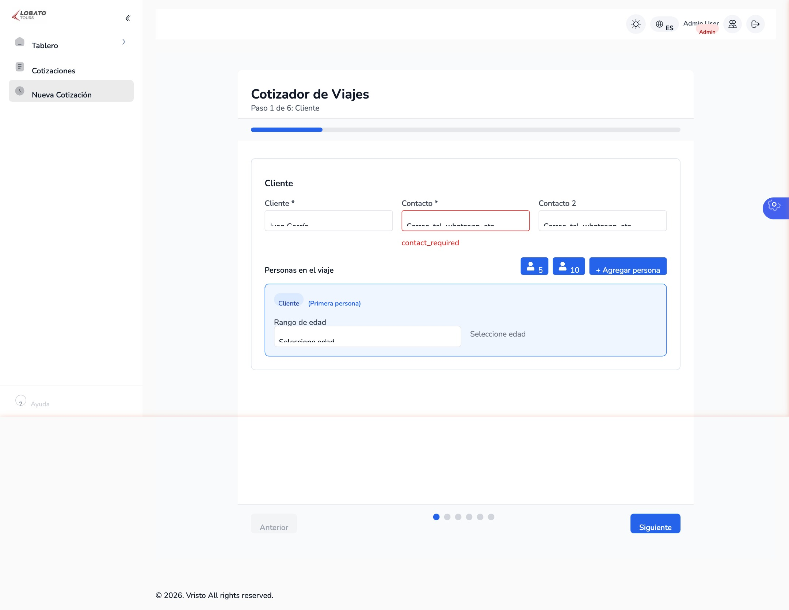
The first step of every quote. You establish who the quote is for and list everyone who will be travelling.
Client Contact Fields
| Field | What it does | Why it matters |
|---|---|---|
| Client Name * | The full name of the main client or group leader. | Required to finalize. Appears on the PDF header and identifies the quote in the Quotes List. Use the full name as the client will want to see it on the document. |
| Contact (email / phone) * | The primary way to reach the client — email address or phone number. | Required to finalize. Used to generate the WhatsApp share message. Without this the system cannot confirm how to reach the client. |
| Secondary Contact | A backup email or phone number for a second point of contact. | Optional but useful for group bookings where a second person is also involved in the decision. |
Travelers
Every person traveling must be added with their age range. Age ranges determine pricing since most airlines, hotels, and attractions price differently for infants, children, teens, and adults.
| Control | What it does | Why you use it |
|---|---|---|
| + Add Person button | Adds one new traveler row to the list below. | Add travelers one at a time when building the group manually. |
| +5 group button | Adds five traveler rows at once. | Save time with medium-sized groups — add five slots then fill in each age range. |
| +10 group button | Adds ten traveler rows at once. | Save time with large tour groups — add a full group at once then fill in ages. |
| Age Range dropdown (per traveler) | Select the traveler's age bracket from four options: 0–2 (Infant), 3–11 (Child), 12–17 (Teen / Junior), 18+ (Adult). | Required for every traveler to finalize. Many airline, hotel, and activity prices change significantly by age — this ensures correct pricing on the PDF. |
| Remove button (per traveler) | Removes that traveler from the list permanently. | Delete someone added by mistake or a traveler who dropped out of the group. |
Step 2 – Trip Info
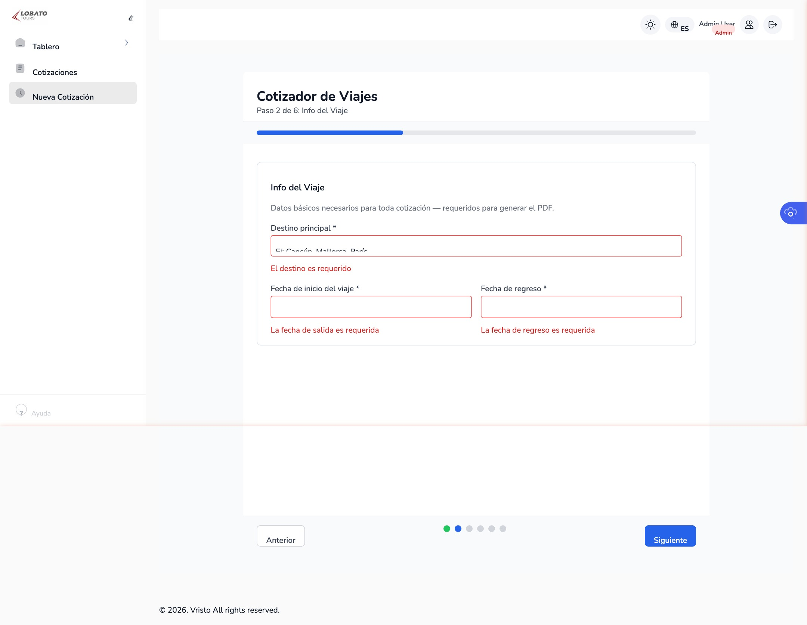
This step captures the core trip details that appear on the PDF regardless of which services are included. Fill this in early — these three fields are required to finalize any quote.
| Field | What it does | Why it matters |
|---|---|---|
| Main Destination * | The primary destination of the trip (e.g., "Cancún", "Rome + Florence", "Miami & Orlando"). | Required to finalize. Appears prominently on the PDF header and in the Quotes List table. Helps both you and the client identify the quote at a glance. |
| Trip Start Date * | The departure date — the first day of the trip. | Required to finalize. Appears on the PDF so the client knows exactly when the trip begins. |
| Return Date * | The return date — the last day of the trip. | Required to finalize. Together with the start date this defines the total trip duration shown prominently on the PDF. |
Step 3 – Currency
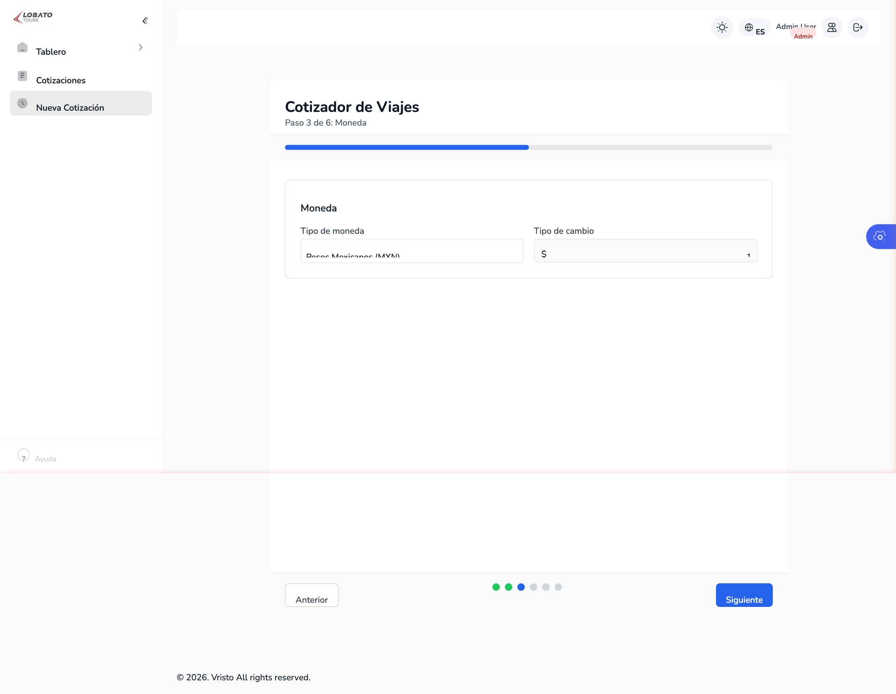
Choose the currency for this quote and, when pricing in USD, set the exchange rate for converting to MXN.
| Field | What it does | Why you use it |
|---|---|---|
| Currency selector | Toggle between MXN (Mexican Peso) and USD (US Dollar). | Match the currency your client expects the quote to be in. Some international suppliers price in USD while clients budget in MXN — select whichever is correct for this trip. |
| Exchange Rate | Enter today's MXN-to-USD conversion rate (e.g., 17.5). Only required when USD is selected. | The system uses this rate to show accurate MXN equivalents on the PDF total. Set it to today's rate every time you create a USD quote so the client gets a realistic estimate. |
Step 4 – Service Selection
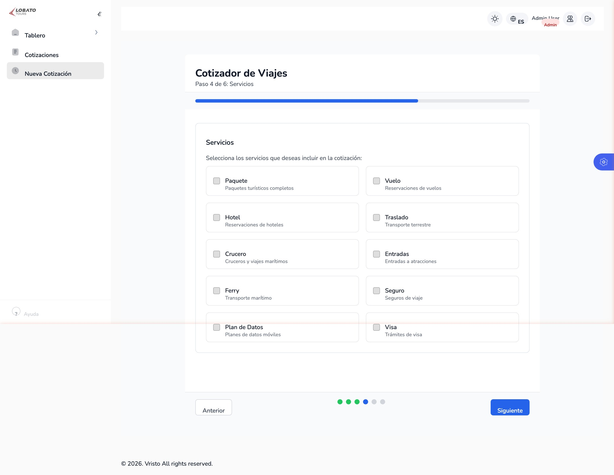
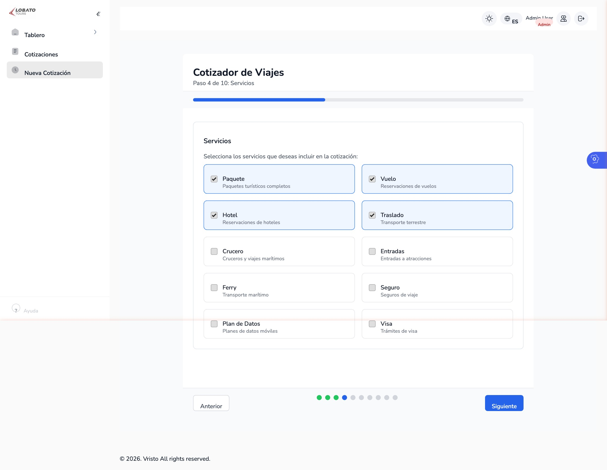
Select every service you want to include in this quote. Each service you activate adds a dedicated step after this one where you fill in its specific details and pricing. You can add or remove services at any time by returning to this step.
| Service | What it adds to the quote | When to use it |
|---|---|---|
| Package | A complete tour package — name, all-in price, and full description. | When selling a pre-packaged or all-inclusive trip from a tour operator. |
| Flight | Airline, base fare, taxes, airport fees, and luggage charges. | Any time airfare is part of the trip being quoted. |
| Hotel | Hotel name, room type, number of nights, and nightly rate. | When accommodation is included in the trip. |
| Transfer | Ground transportation — airport shuttle, private van, or car service. | When the client needs transport between the airport, hotel, or attractions. |
| Cruise | Cruise line, cabin category, itinerary ports, and pricing. | For cruise-based itineraries where the ship is the destination. |
| Tickets | Admission tickets for parks, shows, or attractions with per-person pricing. | Disney World, Universal Studios, concerts, museums, sports events, etc. |
| Ferry | Ferry route, operator name, and fare. | Island destinations or coastal routes requiring a ferry crossing (e.g., Playa del Carmen to Cozumel). |
| Insurance | Travel insurance provider and coverage amount. | Always recommended. Include when the client wants peace of mind for medical emergencies, trip cancellation, or lost luggage. |
| Data Plan | Mobile data plan details and cost for use in the destination country. | When the client will travel internationally and needs phone data without roaming charges. |
| Visa | Visa type, destination country, and processing fee. | For any destination requiring a visa — US ESTA, Schengen visa, Canadian eTA, etc. |
Steps 5+ – Service Detail Steps
For each service selected in Step 4, a dedicated step appears in the wizard. Below are the key fields for the most commonly used services.
Package Step
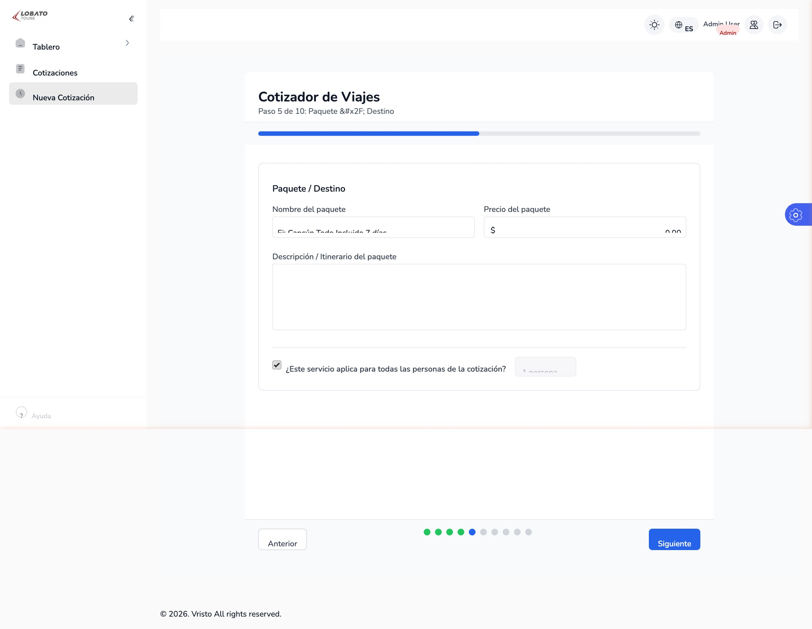
| Field | What it does | Why it matters |
|---|---|---|
| Package Name | The name of the package (e.g., "Cancún All-Inclusive 7 Nights"). | Appears as the package title on the PDF. Use a descriptive name the client will remember. |
| Package Price | The total package price including everything the package covers. | This feeds directly into the quote total and the PDF. Enter the net cost — commission will be added separately. |
| Package Description | Free-text area describing everything included: itinerary, meals, activities, inclusions, and exclusions. | This is the main body text on the PDF. Be thorough — the more detail you give, the less back-and-forth with the client. |
| Number of People | How many travelers the package price covers. | Used to calculate the per-person price shown on the PDF. |
Flight Step
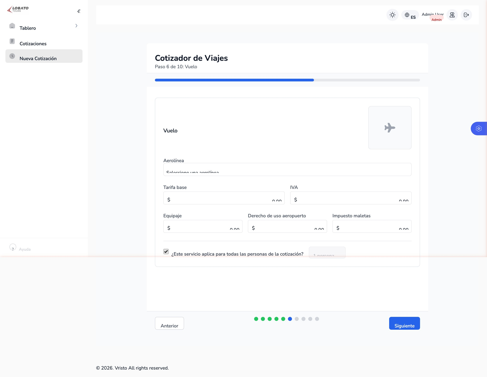
| Field | What it does | Why it matters |
|---|---|---|
| Airline | Select from the airline dropdown or type a custom name if your airline is not listed. | Appears on the PDF so the client knows which carrier to expect. |
| Base Fare | The published ticket price before any taxes or fees. | The starting point for the total flight cost calculation. |
| IVA / Taxes | Government taxes applied to the airfare. | Must be included so the total accurately reflects what the client will pay. |
| Airport Right of Use (TUA) | The airport departure/arrival fee charged per passenger. | This is mandatory in Mexico (TUA) and many other countries — must be included in the quote. |
| Luggage Fee | Checked bag charges per passenger. | Many budget airlines charge separately for bags — include this to avoid unpleasant surprises for the client. |
| Number of People | How many passengers this flight pricing covers. | The system multiplies all per-person fees by this count to produce the correct total. |
Hotel Step
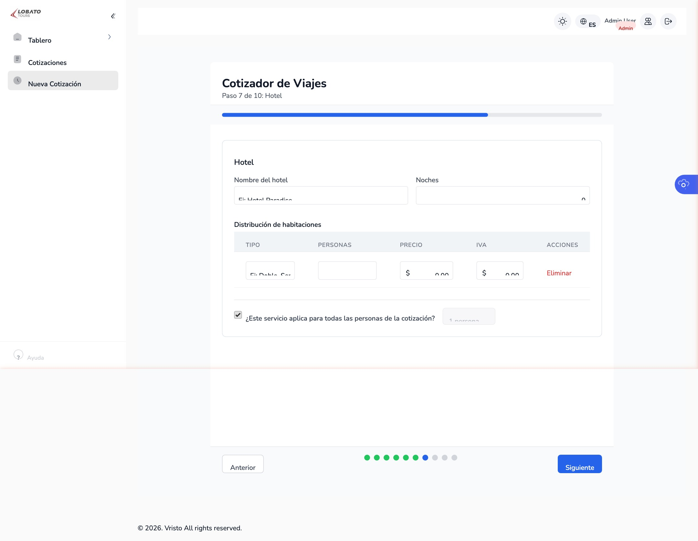
| Field | What it does | Why it matters |
|---|---|---|
| Hotel Name | The name of the property as it will appear on the PDF. | Clients compare hotels by name — use the exact official name. |
| Room Type | Standard, Deluxe, Junior Suite, Ocean View, etc. | Sets the client's expectations about what they are getting. |
| Number of Nights | Total nights staying at the property. | Multiplied by the nightly rate to produce the hotel subtotal automatically. |
| Rate per Night | The nightly room rate in the selected currency. | The system multiplies this by nights to give the hotel total — no manual math needed. |
Transfer Step
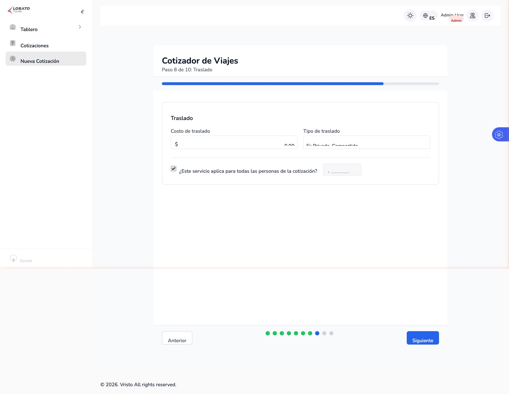
| Field | What it does | Why it matters |
|---|---|---|
| Transfer Type | Shared shuttle, private van, private SUV, luxury car, etc. | Tells the client exactly what transport they are getting and sets quality expectations. |
| Provider | Name of the transport company or service. | Useful for the client to know who to look for at the airport, and for the agent to track supplier relationships. |
| Amount | Total cost for the transfer service (all passengers, round trip or one-way as applicable). | Added to the quote total and displayed on the PDF. |
Messages & Commission Step
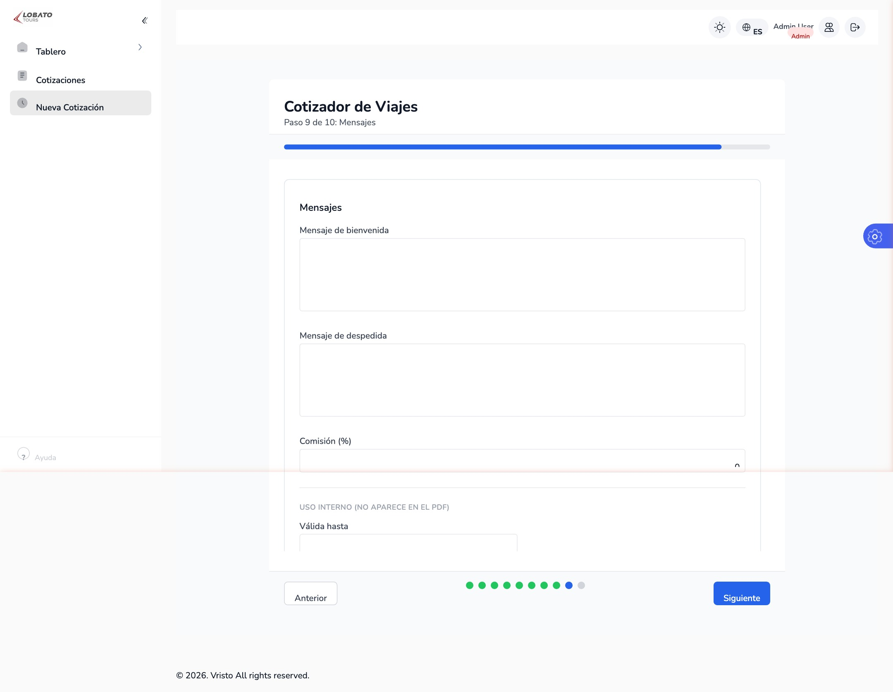
The second-to-last step. Add personal notes and set your commission before the final summary.
| Field | What it does | Why you use it |
|---|---|---|
| Message to Client | A personal note that appears directly on the PDF — greetings, important conditions, payment instructions, or anything else you want the client to read. | Personalize the quote and communicate terms, deadlines, or special conditions directly in the document so the client has everything in one place. |
| Internal Notes | Notes for your own reference that do NOT appear on the client PDF — supplier booking references, contact names, reminders to follow up. | Keep all relevant context attached to the quote without exposing it to the client. |
| Commission % | Your agency's commission percentage for this quote. The system calculates the exact amount automatically. | Sets how much profit is added on top of the service costs. The commission amount appears on the PDF summary so everything is transparent. |
| Commission Date | The date used for commission tracking and reporting purposes. | Helps managers and admins track commissions by time period and reconcile earnings reports. |
Summary Step
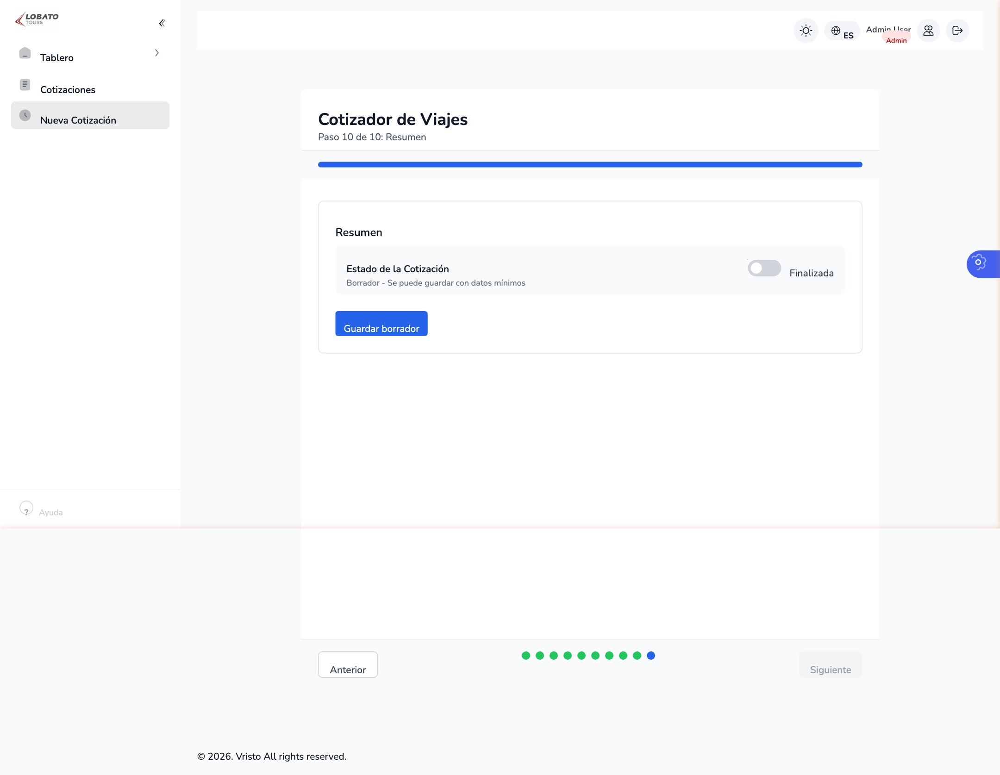
The final step of the wizard. Here you decide whether the quote is complete and ready to share with the client.
| Control | What it does | Why you use it |
|---|---|---|
| Quote Status label | Shows the current state: Draft or Finished. | Quick reference — know at a glance whether this quote is ready to share. |
| Finished toggle switch | The green/gray toggle switch that marks the quote as finished. When you try to turn it ON, the system validates all required fields. If any required field is missing, the toggle shakes back to the OFF position and a toast notification appears listing exactly which fields need to be completed. When all required fields are filled, the toggle turns green and stays ON. | This is the quality gate that prevents incomplete quotes from being finalized. Use it only when you are confident the quote is complete and ready for the client. |
| Save Draft button | Saves all current data as a draft without marking the quote as finished. The quote remains editable. | Save your work and come back later to complete it. Use this constantly while building the quote so you never lose progress. |
| Finalize Quote button | Saves the quote with Finished status. Shown in green when the Finished toggle is ON. | Lock the quote as complete and ready to present to the client. |
| Export PDF button | Opens the fully branded PDF in a new browser tab. Only appears after the quote is marked Finished and has been saved with an ID. | The client-facing document. Review it, print it, save it, or copy the URL to share with the client directly. |
- Client name
- Client contact (email or phone)
- Age range for the first traveler
- Main destination
- Trip start date
- Return date
- At least one service selected
8. Quote Statuses
| Status | Meaning | What you can do |
|---|---|---|
| Draft | The quote is incomplete or has not yet been marked as finished. It may have missing required fields or no services selected yet. | Edit freely at any time. Cannot generate a shareable PDF until finalized. |
| Finished | All required fields are complete. The quote is finalized and ready to share with the client. | Generate and share the PDF, send via WhatsApp, create sub-quotes. Still fully editable — editing will reset status to Draft until re-finalized. |
9. Exporting PDFs
A PDF can be generated from two places:
- From the Summary step in the wizard — click the red Export PDF button (only visible once the quote is Finished and has a saved ID).
- From the Quote Detail page — click the red PDF button in the top action bar.
The PDF opens in a new browser tab. From there you can:
- Print using your browser's print function (Ctrl+P or Cmd+P on Mac).
- Save to your computer by selecting "Save as PDF" in the print dialog.
- Copy the URL from the address bar and share it directly with the client — the link is permanent as long as the quote exists in the system.
10. Tips & Best Practices
- Fill Trip Info in Step 2 early — Destination, start date, and return date are required for the PDF. Enter them right after the client step so you never get to the end and realize they are missing.
- Auto-save is always running — The system saves every time you click Next, Previous, or a navigation dot. Close the browser at any time and your progress will be waiting when you return.
- Use Duplicate for variations — If a client wants to compare two options (7 nights vs. 10 nights, economy vs. business class), duplicate the quote and adjust one copy — far faster than starting over.
- Sub-quotes for mixed groups — When a group has travelers with different requirements, use sub-quotes rather than building one giant confusing quote. Each person gets a clean, relevant document.
- Always preview the PDF before sending — Open the PDF and check the client name, destination, dates, and totals before sharing the link. A few seconds of review prevents embarrassing mistakes.
- Use the search bar in the Quotes List — Search by client name, phone number, or destination to find any quote instantly instead of scrolling.
- Set the exchange rate every time for USD quotes — Exchange rates change daily. Always enter today's rate in Step 3 to give the client an accurate MXN total on the PDF.
- Use Internal Notes for supplier details — Supplier booking codes, contact names, and deadlines belong in the Internal Notes field — they are invisible to the client but attached to the quote for your own reference.
Lobato Tours Quoting System · User Manual · Version 2.0